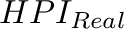
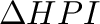
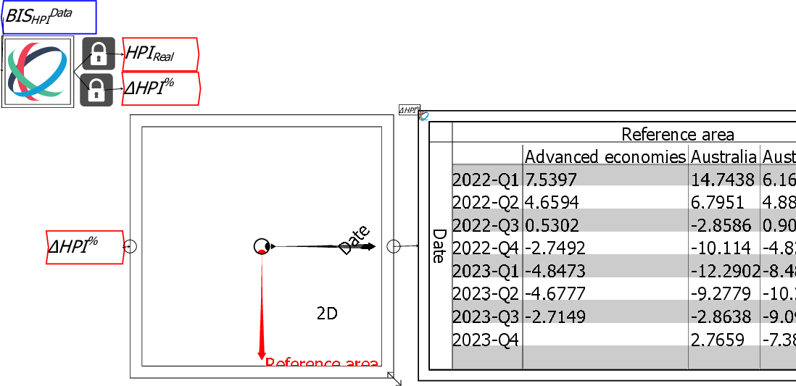
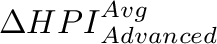
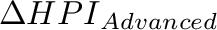

The source data file combines information on House Price Indices (where the base year is 2010, so all indices are 100 during 2010), and the annual rate of change of house prices, with data on both Nominal and Real (CPI-deflated) prices. To analyse the data, it is useful to separate it into House Price Index information and House Price Inflation information, and to focus on Real rather than Nominal Prices. That is done by attaching the output of the Ravel to Locks, and the Locks to named Variables that you create.
The next image shows two variables  and . The lock for has been closed, while the lock for is still open. Once the lock is closed, the output from that lock remains the same, even if the selection on the source Ravel is altered.

With the data separated into index and inflation data, we can now focus on those subsets of the data rather than the entire source file. The next image shows the source Ravel in icon mode, with the house price inflation data attached to another Ravel and the currently selected data displayed in a sheet.

The information in the sheet suggests a possibly useful piece of analysis: why not compare the average for all advanced countries (the first entry on the Reference Area axis) to each advanced country?
The image below shows the result of attempting to do this by selecting just the data for ``Advanced Economies'' using the selector dot, and attaching that to a new variable , while also selecting a number of advanced economies from the axis (Australia, Austria, Belgium, etc.) and assigning that to another variable .